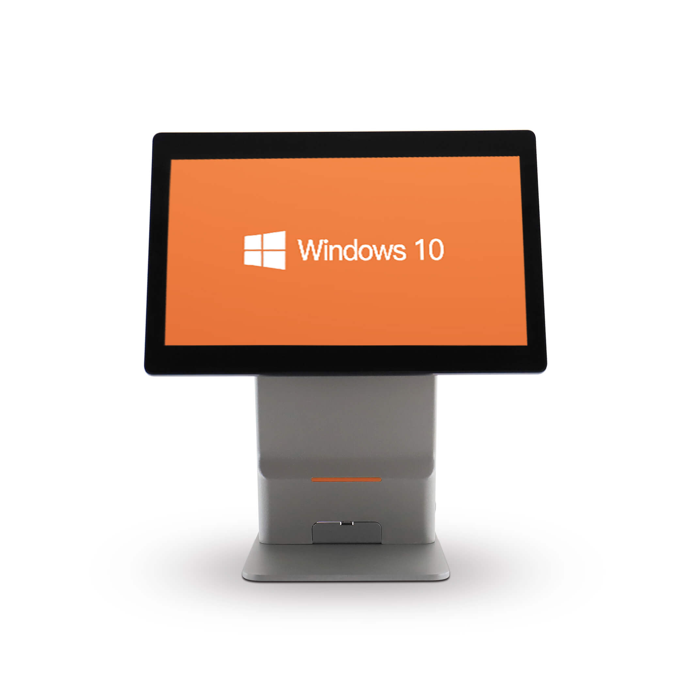
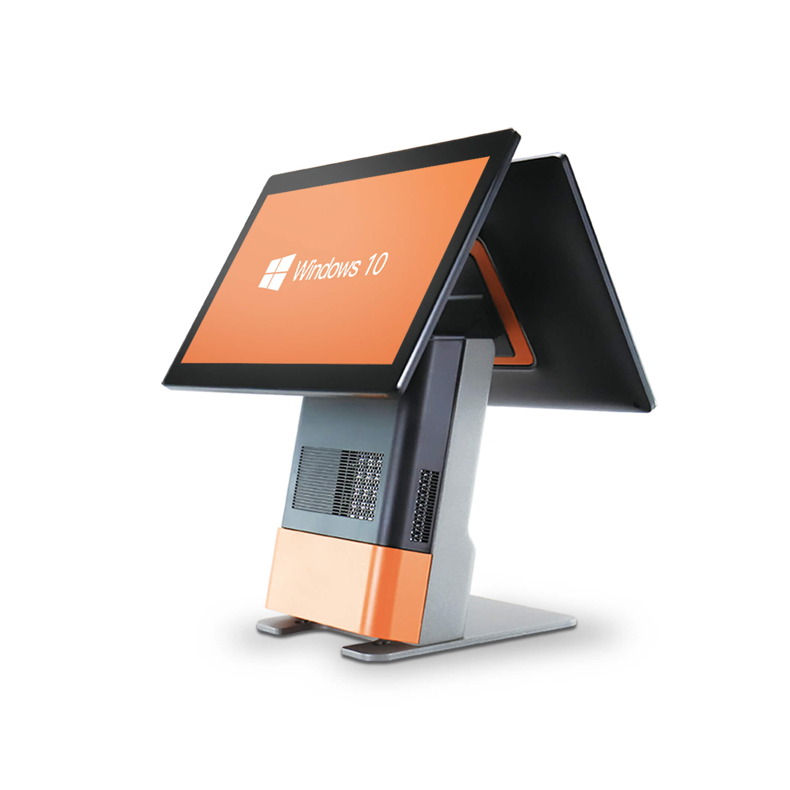
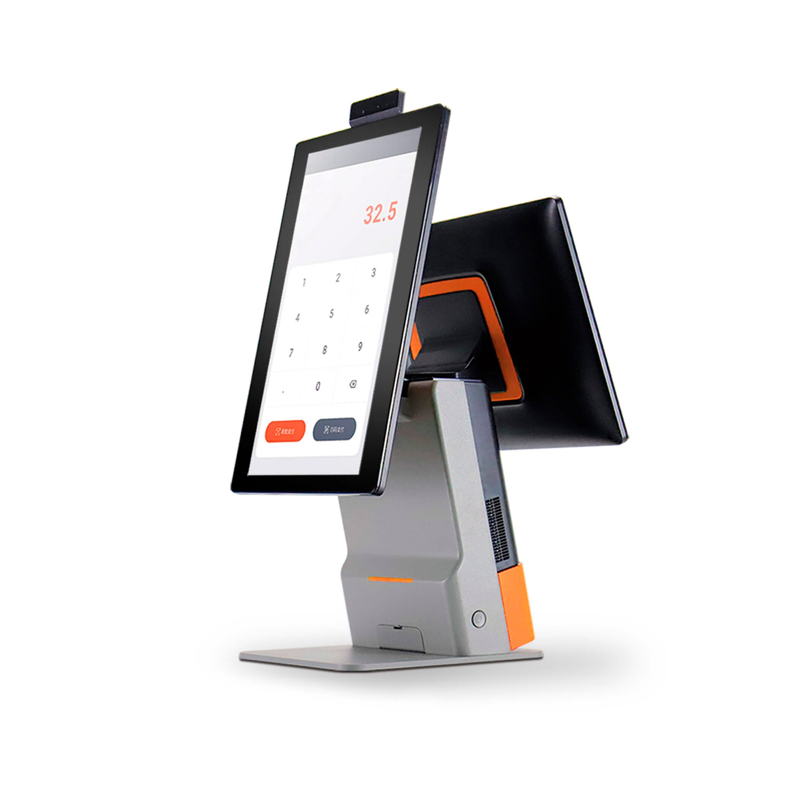
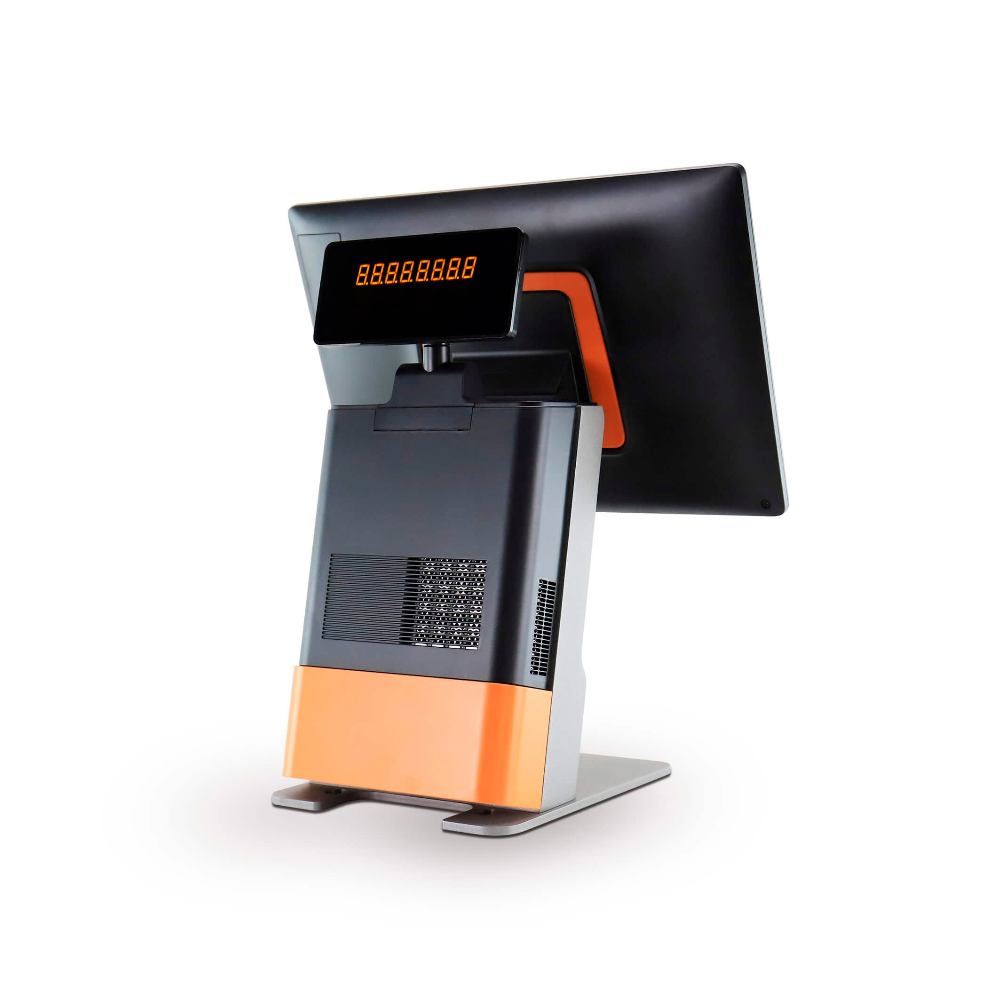
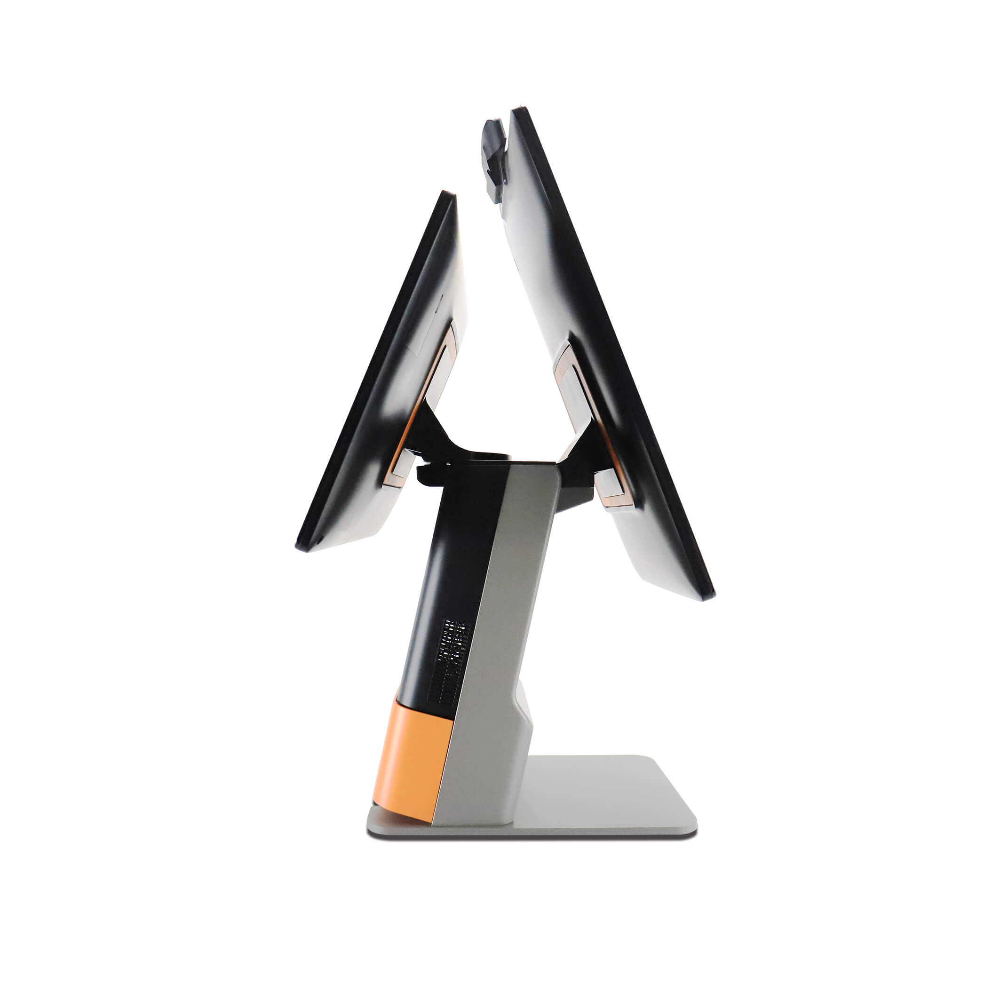

Contacto
- Bogotá, Colombia
POS dual para experiencias de venta con pantalla cliente
El K&T-K21 / K22 lleva la experiencia de caja a un nivel superior mediante una configuración de doble pantalla, pensada para que el cliente visualice información relevante durante la transacción. Ideal para operaciones donde la transparencia, la comunicación visual y la experiencia de compra son factores clave.





La configuración de doble pantalla del K&T-K21/K22 permite que el cajero opere en la pantalla principal mientras el cliente visualiza en tiempo real los productos, precios, totales y medios de pago disponibles. Esta transparencia mejora la experiencia del comprador y genera mayor confianza en el proceso.
Pantalla principal para el cajero y pantalla secundaria para el cliente, ambas con tecnología táctil capacitiva.
El cliente visualiza en tiempo real productos, precios, descuentos y totales, generando mayor confianza.
Estructura metálica de alta resistencia diseñada para operación diaria intensiva en ambientes comerciales.
Intel® Celeron, Core™ i3 o Core™ i5 disponibles según configuración para un rendimiento adaptado a cada operación.
Puertos USB, LAN, serial, cajón monedero y soporte para periféricos adicionales del ecosistema de caja.
La pantalla secundaria puede usarse para mostrar información comercial, promociones o cartelería mientras no hay transacción activa.
Diseñado para organizaciones que necesitan velocidad en caja, integración con sistemas y continuidad operativa.
Acompañamos proyectos en Colombia, Centroamérica y El Caribe con enfoque consultivo y soporte especializado.
Podemos integrar el POS con turnos, cartelería digital, autogestión y operación omnicanal bajo una sola plataforma.
No solo entregamos hardware. Analizamos su operación y recomendamos la configuración adecuada para su sector.
Acompañamiento preventivo y correctivo según el alcance contratado con equipo especializado.
Diseño, configuración, integración y pruebas para despliegues corporativos con altos estándares.
Soluciones preparadas para crecer por sede, ciudad, país o región junto con su operación.
La doble pantalla del K&T-K21/K22 transforma cada transacción en una experiencia más transparente y profesional. Hablemos de su operación.